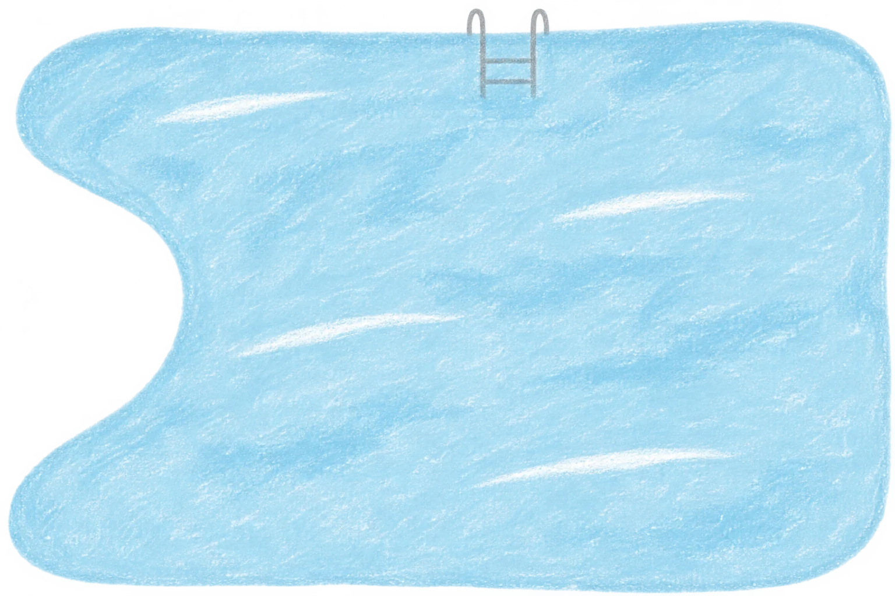

按生活里的小事翻阅
生活手册
从买回来，到好好用完。
随手翻翻
从这件小事开始
互动小局
玩一会儿，也懂一点。
选一件小事，动手试试看。
PLAY A LITTLE, LEARN A LITTLE
生活解题局 —— 这一步，你会怎么接？
几张打乱的小步骤，一件等你理顺的生活小事。
A LITTLE SHOPPING WISDOM
超市天平 —— 这张价签，你看明白了吗？
把商品拖上托盘，让一笔小账慢慢浮出答案。
THE LITTLE STAIN DETECTIVE
污渍侦探社 —— 先找线索，再想办法。
一件衣服出了状况，跟着线索一步步排查。
PACK A LITTLE, TRAVEL LIGHT
行李箱拼图 —— 装得下，也拿得顺。
拖动、旋转，把出行的小物件安排得刚刚好。
没有找到相关内容，换个关键词或分类试试。